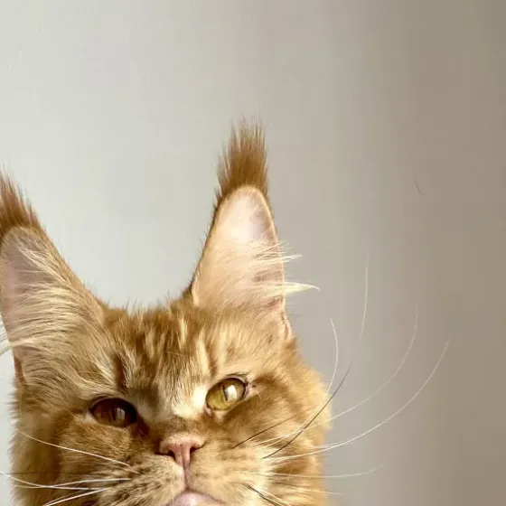

I

Oreilles
Lynx tips
Les touffes de poils qui prolongent la pointe de l’oreille. Elles brisent le vent et protègent le conduit du froid. Grandes oreilles larges à la base, plantées haut : l’un des traits les plus recherchés du standard.